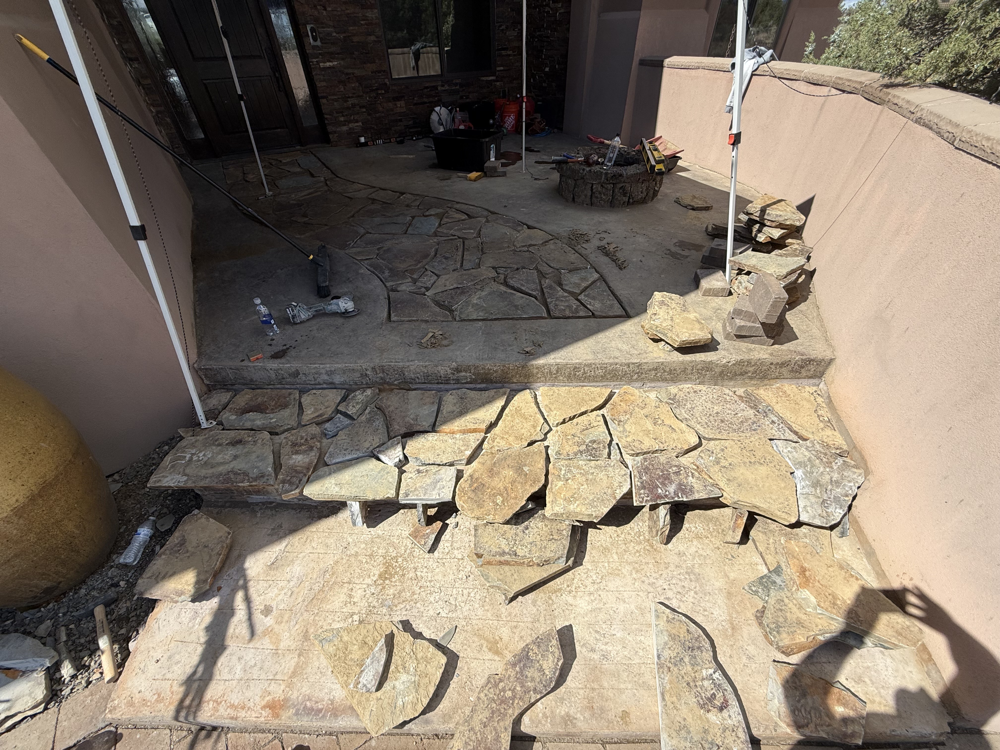

Stonemasonry
Retaining walls, steps, and fire features hand-set on reinforced bases with drainage and compacted backfill.
- Basalt, granite, and natural stone sourced locally
- Drain tile, clean gravel backfill, and weep zones for slopes
- Lighting, caps, and finish work for year-round use